tm_shape(World) +
tm_polygons(
fill = c("gender", "inequality"),
fill.legend = tm_legend("")) +
tm_crs("auto") +
tm_layout(panel.labels = c("Gender inequality", "Economic inequality"))Advanced Static Cartography in R
Session 4: Bivariate choropleths and multivariate mapping
Martijn Tennekes
Multivariate mapping
Showing more than one variable
Options to show two or more data variables:
- Facets (small multiples): one map per variable
- Multiple map variables: e.g. fill color for one variable, symbol size for another
- Multivariate map variables: one map variable encodes several data variables
- bivariate choropleth: two variables → one fill color
- RGB images: three bands → one color
- glyphs: several variables → one small chart (session 6)
1. Facets
Easy to read per variable, but the reader has to compare the maps to see the relationship.
1. Facets
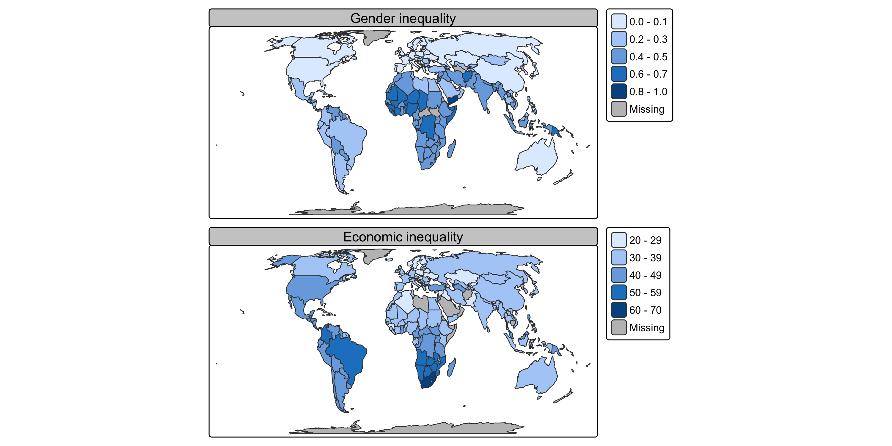
Facets by variable
fill.free = FALSE: one shared scale, so the maps can be compared.
Facets by variable
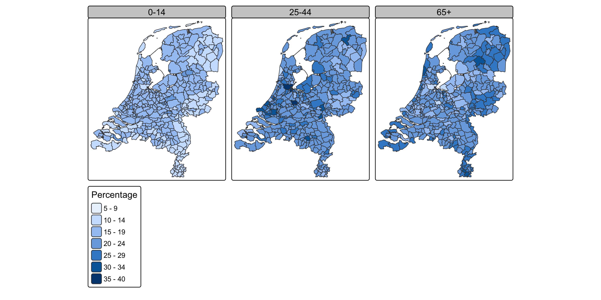
Facets: one variable, different scales
Repeat the variable and pass a list of scales (and optionally legends), one per facet:
- Used for the classification comparison in session 2
- Unlike
tmap_arrange(), the panels and legends are aligned, because it is one map
Facets by group
tm_facets_wrap(), tm_facets_stack(), tm_facets_grid() (rows × columns), tm_facets_pagewise() (animations)
Facets by group
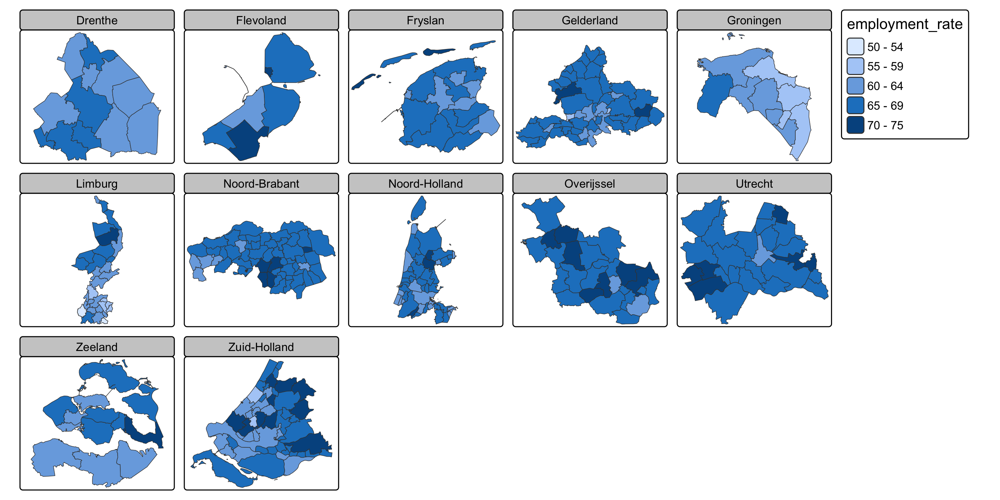
2. Multiple map variables
tm_shape(World) +
tm_polygons(
fill = "gender",
fill.scale = tm_scale_intervals(values = "brewer.purples", value.na = "grey90"),
fill.legend = tm_legend("Gender inequality")) +
tm_symbols(
size = "pop_est",
fill = "inequality",
fill.scale = tm_scale_intervals(values = "brewer.yl_or_br"),
fill.legend = tm_legend("Economic inequality"),
size.legend = tm_legend("Population")) +
tm_crs("auto")2. Multiple map variables
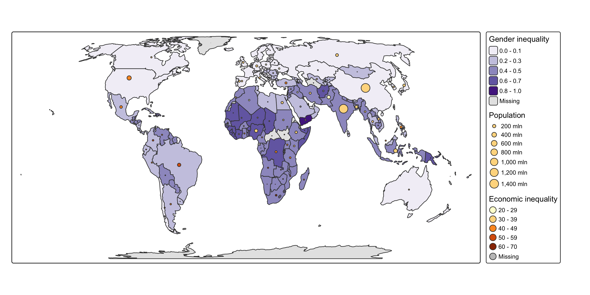
Multiple map variables: considerations
- Each map variable has its own scale and legend
- Combine map variables that are perceived separately: e.g. area fill + symbol size
- Two color variables (polygon fill + symbol fill) compete for attention
- Visual hierarchy: which variable should be read first?
Multiple legends: neutral values
value.neutral defines the visual value used in the other legends:
Multiple legends: neutral values
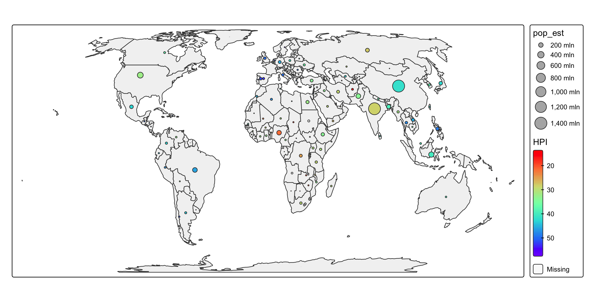
Combining legends
When two map variables show the same data variable:
Combining legends
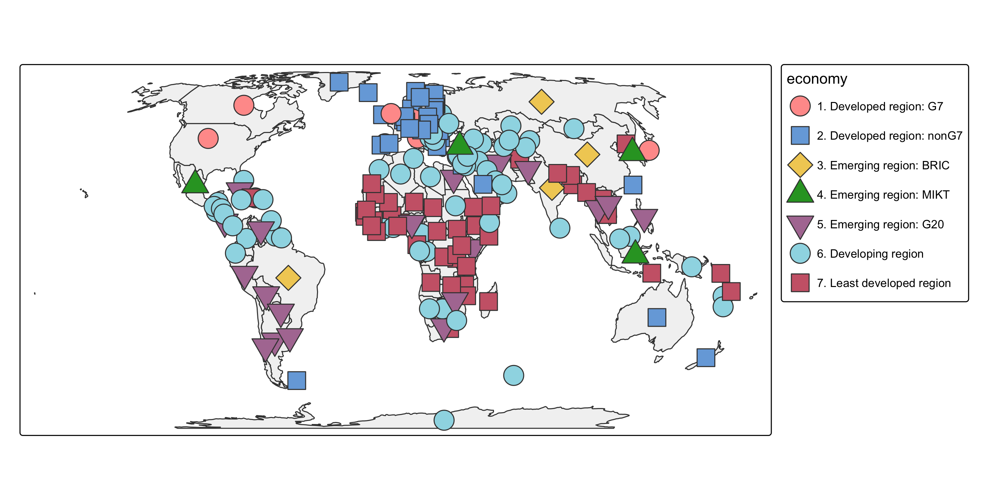
Multiple data variables for one map variable
Specifying a vector of variables creates facets:
The function tm_vars() offers more options, including multivariate mapping:
Bivariate choropleths
Step 1: minimal example
Step 1: minimal example
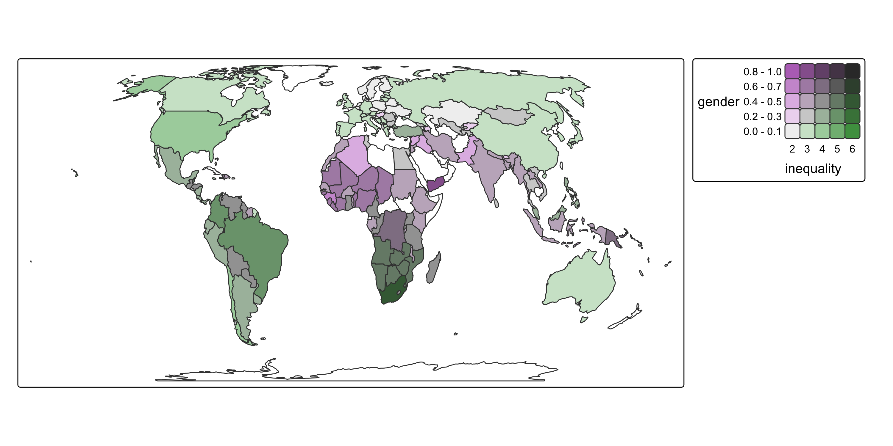
How to read a bivariate choropleth
- Each variable is classified into (usually) 3 classes
- The 3 × 3 combinations each get a color from a 2D palette
- The legend is a 3 × 3 grid: essential for reading the map
- Diagonal: both variables low / both high → shows correlation
- Off-diagonal corners: one high, the other low → shows exceptions
More than 3 × 3 classes is usually hard to read.
Step 2: bivariate color palettes
By default "pu_gn_bivs" from cols4all is used. Four types of bivariate palettes:
Step 2: bivariate color palettes
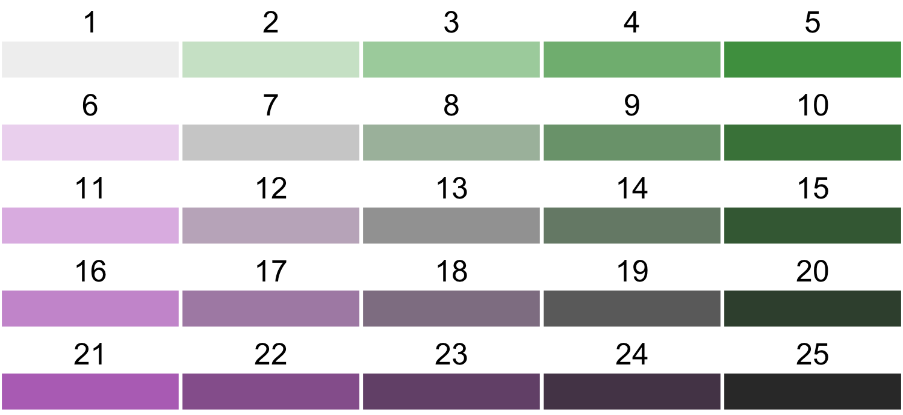
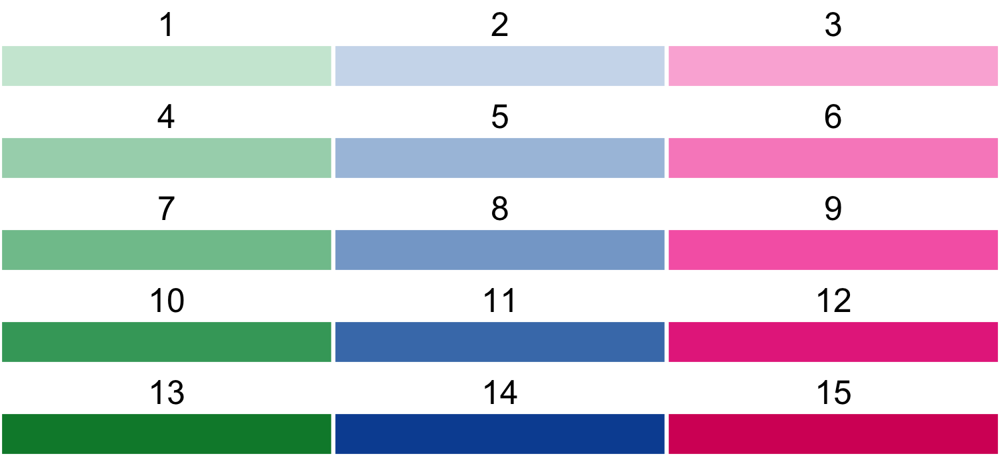
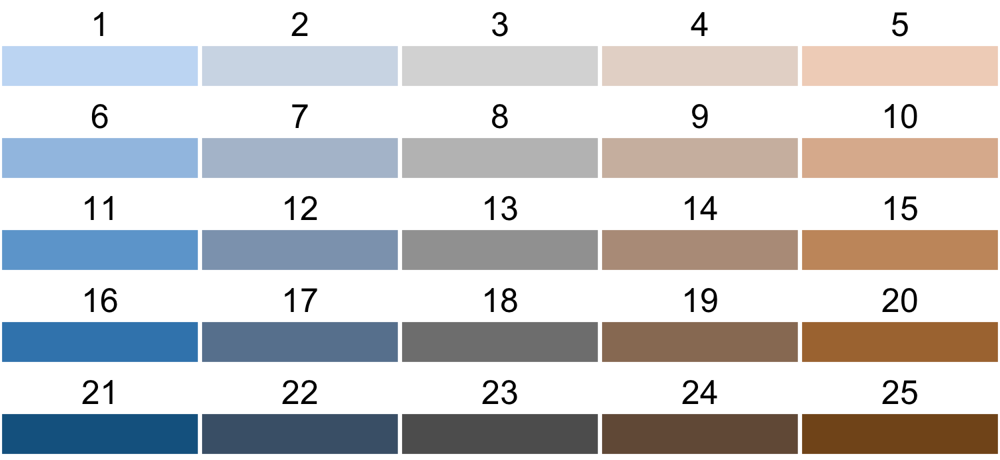
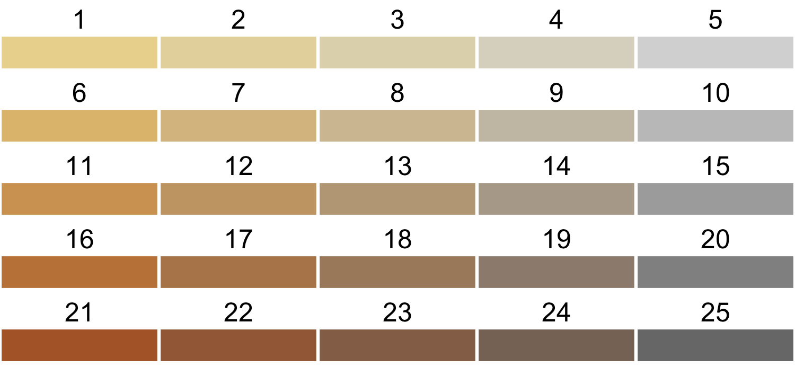
Available bivariate palettes
[1] "cols4all.bu_br_bivs" "cols4all.pu_gn_bivs"
[3] "stevens.pinkgreen" "stevens.bluered"
[5] "stevens.pinkblue" "stevens.greenblue"
[7] "stevens.purplegold" "brewer.seqseq1"
[9] "brewer.seqseq2" "bivario.plum_mint"
[11] "bivario.peacock_court" "bivario.rosewood_pine"
[13] "bivario.flamingo_lagoon" "bivario.sunrise_harbor"
[15] "bivario.coral_ocean" "bivario.glacier_ember"
[17] "bivario.verdant_orchard" "bivario.frosted_marigold"
[19] "bivario.marigold_current" "bivario.amber_drift"
[21] "bivario.triadic_garden" "bivario.electric_neon"
[23] "bivario.solar_pasture" "bivario.jungle_roar"
[25] "bivario.citrus_forest" "bivario.berry_bush"
[27] "bivario.late_sunset" "bivario.bubblegum"
[29] "bivario.kaleidoscope" "bivario.radiant_shift"
[31] "bivario.blade_runner" "bivario.grand_budapest"
[33] "bivario.folk_warmth" "bivario.earth" Other types: "bivc", "bivd", "bivg". Use c4a_gui() to analyse them (also color-blind friendliness).
Flipping bivariate palettes
| Prefix | Meaning |
|---|---|
"-" |
flip columns |
"|" |
flip rows |
"+" |
flip rows and columns |
"//" |
flip diagonally |
"\\" |
flip the other diagonal |
Prefixes can be combined, e.g. "-//".
Note: the origin of a palette plotted with c4a_plot() is top left, but the origin of a bivariate legend in tmap is bottom left, so the diagonal prefixes need to be the other way round.
Palettes in tmap: tm_scale_bivariate()
Palettes in tmap: tm_scale_bivariate()
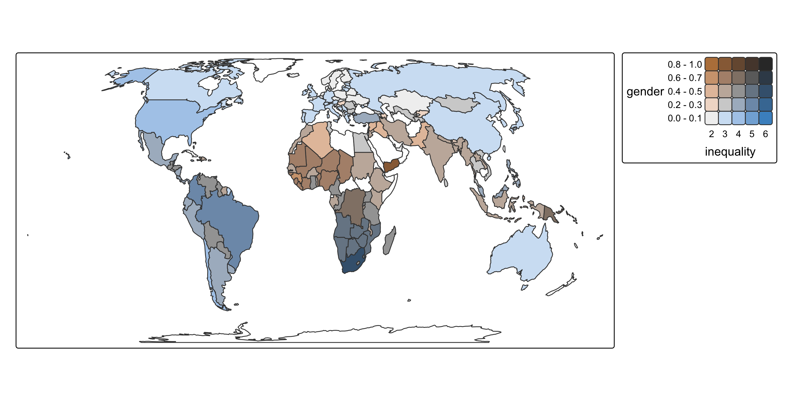
Custom bivariate palettes
This palette is also known as "stevens.bluered". Note that it is not the most color-blind friendly one: check with c4a_gui().
Custom bivariate palettes
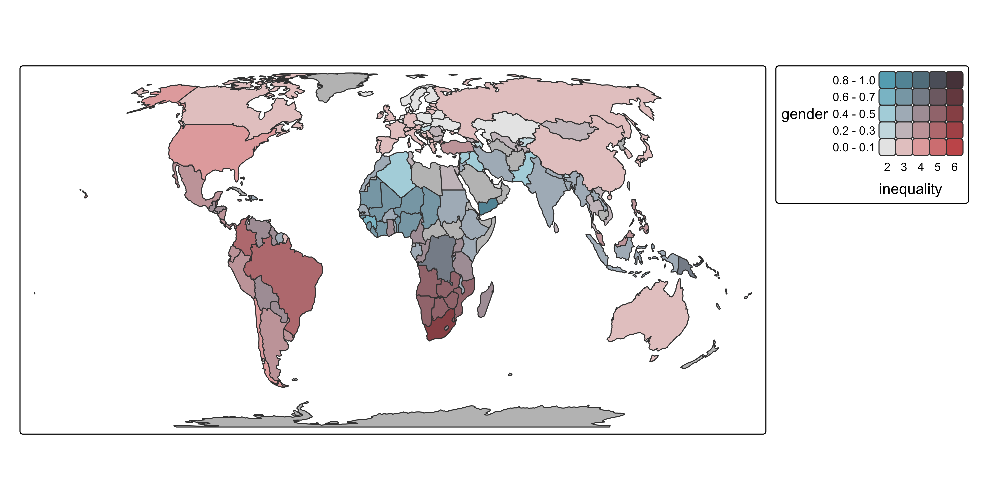
Step 3: the individual scales
scale1 and scale2 define how each variable is classified:
tm_shape(World) +
tm_polygons(
fill = tm_vars(c("gender", "inequality"), multivariate = TRUE),
fill.scale =
tm_scale_bivariate(
scale1 = tm_scale_intervals(style = "kmeans", n = 3, labels = c("L", "M", "H")),
scale2 = tm_scale_intervals(style = "kmeans", n = 3, labels = c("L", "M", "H")),
values = "bu_br_bivs")) +
tm_crs("auto")Step 3: the individual scales
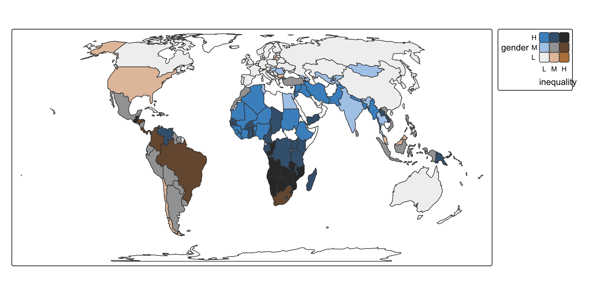
Choosing the class breaks
"quantile": each row and column of the legend holds (about) one third of the features- the marginal distributions are balanced, but the 9 cells are not
"kmeans","fisher": natural groups in the data"fixed"with meaningfulbreaks: e.g. policy thresholds, or the median / average- Check how many features fall in each cell: a chart helps (see below)
Step 4: the legend
tm_shape(World) +
tm_polygons(
fill = tm_vars(c("gender", "inequality"), multivariate = TRUE),
fill.scale =
tm_scale_bivariate(
scale1 = tm_scale_intervals(style = "kmeans", n = 3, labels = c("L", "M", "H")),
scale2 = tm_scale_intervals(style = "kmeans", n = 3, labels = c("L", "M", "H")),
values = "bu_br_bivs"),
fill.legend = tm_legend_bivariate(
xlab = "Gender",
ylab = "Economic",
xlab.size = 1,
ylab.size = 1,
item.r = 0,
item.width = 2,
item.height = 2,
text.size = 1)) +
tm_title("Inequality per country", z = 0) +
tm_crs("auto") +
tm_layout(inner.margins = c(0, 0.15, 0.02, 0.02)) +
tm_components(position = c("left", "bottom"), frame = FALSE)Step 4: the legend
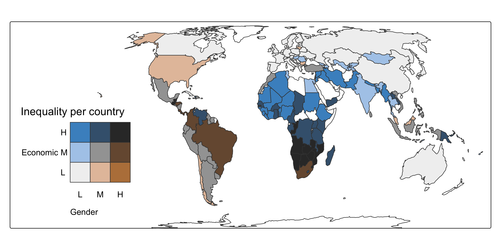
Bivariate legend
tm_legend_bivariate() has all arguments of tm_legend(), plus:
xlab,ylab: axis labelsxlab.size,xlab.color,xlab.rot,xlab.fontface, … (and the same forylab)
Tips:
- Use short labels (L / M / H, or arrows) and explanatory axis titles
- Place the legend where it can be read together with the map (inside the frame, in empty space)
- Square legend items (
item.width = item.height) and no rounding (item.r = 0) give a clean grid
How are the countries distributed?
Quantile classes balance each variable separately, but not the 9 combinations. To show the distribution, we can make our own legend, as a ggplot2 chart shown with tm_inset() (session 10).
Breaks and palette
First, fixed breaks and the palette as a 3 × 3 matrix, so that we know exactly which class and color each country gets:
b1 = quantile(World$gender, probs = seq(0, 1, length.out = 4), na.rm = TRUE)
b2 = quantile(World$inequality, probs = seq(0, 1, length.out = 4), na.rm = TRUE)
pal = c4a("bu_br_bivs", n = 3, m = 3)
pal [,1] [,2] [,3]
[1,] "#F1F1F1" "#E4C2A9" "#B98049"
[2,] "#AECBEA" "#A3A3A3" "#77583F"
[3,] "#4992C8" "#41617D" "#343434"In the tmap legend, row 1 of this matrix is the bottom row (low economic inequality) and column 1 the left column (low gender inequality).
Counting the classes
d = sf::st_drop_geometry(World)
d = d[!is.na(d$gender) & !is.na(d$inequality), ]
d$c1 = cut(d$gender, b1, include.lowest = TRUE, right = FALSE) # closed on the left
d$c2 = cut(d$inequality, b2, include.lowest = TRUE, right = FALSE)
tab = as.data.frame(table(c1 = as.integer(d$c1), c2 = as.integer(d$c2)))
tab$fill = pal[cbind(as.integer(tab$c2), as.integer(tab$c1))]
tab$text_col = ifelse(as.integer(tab$c1) + as.integer(tab$c2) >= 5, "white", "black")A legend with counts
library(ggplot2)
g_leg = ggplot(tab, aes(x = c1, y = c2)) +
geom_tile(aes(fill = fill), colour = "white", linewidth = 1) +
geom_text(aes(label = Freq, colour = text_col), size = 3.5) +
scale_fill_identity() +
scale_colour_identity() +
scale_x_discrete("Gender inequality →", labels = c("L", "M", "H")) +
scale_y_discrete("Economic inequality →", labels = c("L", "M", "H")) +
coord_equal() +
theme_minimal() +
theme(panel.grid = element_blank())A legend with counts: the map
tm_shape(World) +
tm_polygons(
fill = tm_vars(c("gender", "inequality"), multivariate = TRUE),
fill.scale = tm_scale_bivariate(
scale1 = tm_scale_intervals(breaks = b1),
scale2 = tm_scale_intervals(breaks = b2),
values = pal),
fill.legend = tm_legend_hide()) +
tm_inset(g_leg, height = 10, width = 10, position = tm_pos_in("left", "bottom"), frame = FALSE) +
tm_crs("auto") +
tm_layout(frame = FALSE)A legend with counts: the map
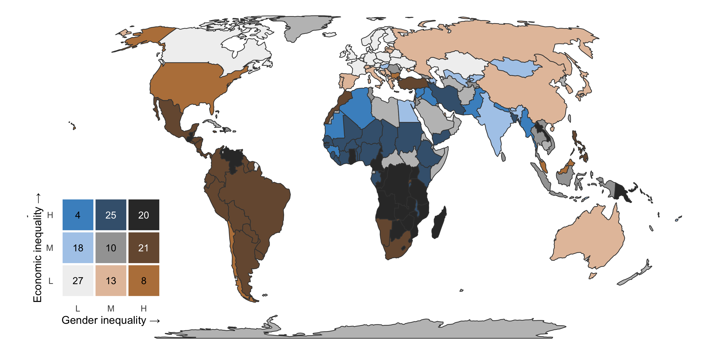
A scatter plot legend
The legend can also show the individual countries: a scatter plot on top of the 9 colored classes.
rects = expand.grid(i = 1:3, j = 1:3) # i: row (economic), j: column (gender)
rects$xmin = b1[rects$j]
rects$xmax = b1[rects$j + 1]
rects$ymin = b2[rects$i]
rects$ymax = b2[rects$i + 1]
rects$fill = pal[cbind(rects$i, rects$j)]
g_sc = ggplot() +
geom_rect(data = rects, aes(xmin = xmin, xmax = xmax, ymin = ymin, ymax = ymax, fill = fill)) +
geom_point(data = d, aes(gender, inequality),
shape = 21, fill = "black", colour = "white", size = 1.5, stroke = 0.3) +
scale_fill_identity() +
labs(x = "Gender inequality", y = "Economic inequality") +
theme_minimal()A scatter plot legend: the map
tm_shape(World) +
tm_polygons(
fill = tm_vars(c("gender", "inequality"), multivariate = TRUE),
fill.scale = tm_scale_bivariate(
scale1 = tm_scale_intervals(breaks = b1),
scale2 = tm_scale_intervals(breaks = b2),
values = pal),
fill.legend = tm_legend_hide()) +
tm_inset(g_sc, height = 12, width = 14, position = tm_pos_out("right", "center"), frame = FALSE) +
tm_crs("auto") +
tm_layout(frame = FALSE)The scatter plot shows the correlation, the outliers, and how the class breaks cut the data. (tmap also has a built-in bivariate chart: fill.chart = tm_chart_heatmap().)
A scatter plot legend: the map
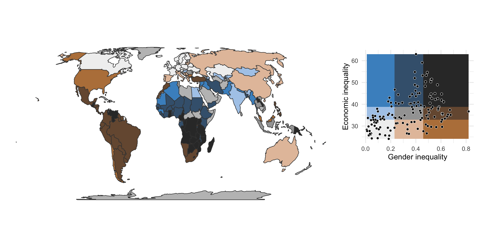
A bivariate map of the Netherlands
tm_shape(NLD_muni) +
tm_polygons(
fill = tm_vars(c("income_high", "edu_appl_sci"), multivariate = TRUE),
fill.scale = tm_scale_bivariate(
scale1 = tm_scale_intervals(style = "quantile", n = 3, labels = c("L", "M", "H")),
scale2 = tm_scale_intervals(style = "quantile", n = 3, labels = c("L", "M", "H")),
values = "pu_gn_bivs"),
fill.legend = tm_legend_bivariate(
xlab = "High income", ylab = "University\ndegree",
item.r = 0, item.width = 2, item.height = 2, frame = FALSE,
position = tm_pos_in("left", "top")),
col = "white", lwd = 0.5) +
tm_shape(NLD_prov) +
tm_borders(col = "grey20", lwd = 1.5) +
tm_layout(frame = FALSE, inner.margins = c(0.05, 0.15, 0.05, 0.05))A bivariate map of the Netherlands
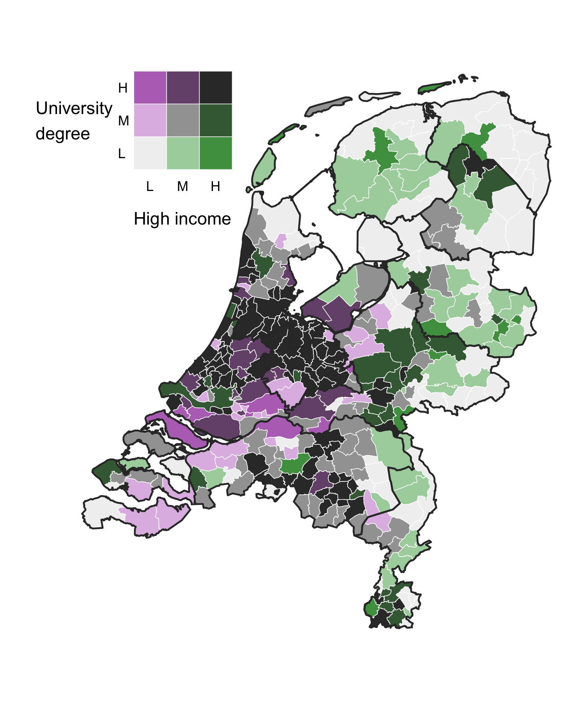
When to use a bivariate choropleth
✅ Good for:
- showing the spatial relationship between two (related) variables
- highlighting areas where the relationship breaks down
🚫 Less suited for:
- audiences who are not used to it (always explain the legend)
- reading exact values of either variable (use facets instead)
- more than 3 × 3 classes
Other multivariate map variables
RGB images
Three bands of a satellite image (red, green, blue) are mapped to one color with tm_scale_rgb().
RGB images
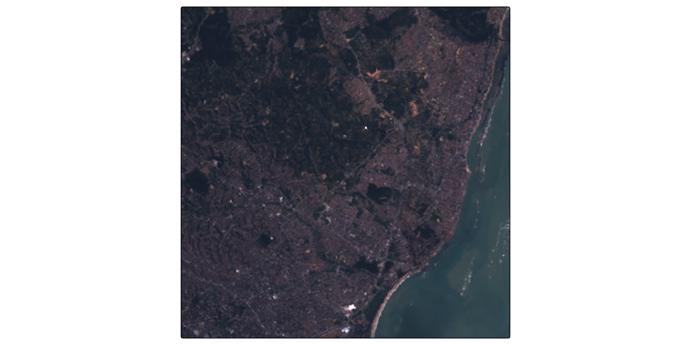
Glyphs (preview)
library(tmap.glyphs)
ZH_muni = NLD_muni[NLD_muni$province == "Zuid-Holland", ]
ZH_muni$income_middle = 100 - ZH_muni$income_high - ZH_muni$income_low
tm_shape(ZH_muni) +
tm_polygons() +
tm_donuts(
parts = tm_vars(c("income_low", "income_middle", "income_high"), multivariate = TRUE),
fill.scale = tm_scale_categorical(values = "-pu_gn_div"),
size = "population",
size.scale = tm_scale_continuous(ticks = c(50000, 100000, 250000, 500000)))More in session 6.
Glyphs (preview)
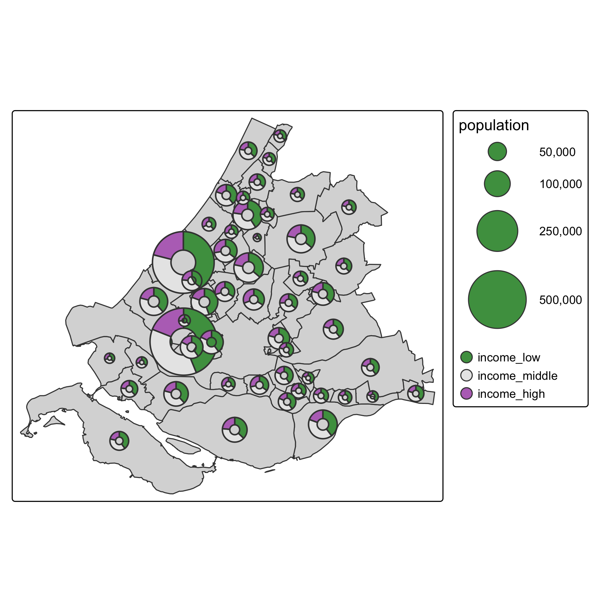
Recap
- Several variables: facets, multiple map variables, or a multivariate map variable
- Facets:
fill = c(...),tm_facets(), or one variable with a list of scales value.neutralandtm_legend_combine()for multiple legendstm_vars(..., multivariate = TRUE)turns several data variables into one map variable- Bivariate choropleth:
tm_scale_bivariate()(withscale1,scale2,values) andtm_legend_bivariate() - Bivariate palettes from cols4all:
"bivs","bivc","bivd","bivg"; flip with prefixes - Keep it at 3 × 3 classes, and make the legend prominent
- Further reading: bivariate choropleth | multivariate | charts